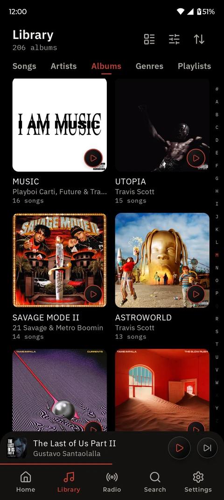
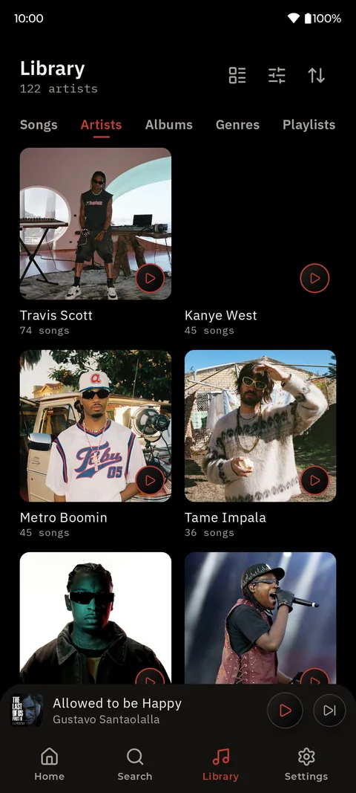
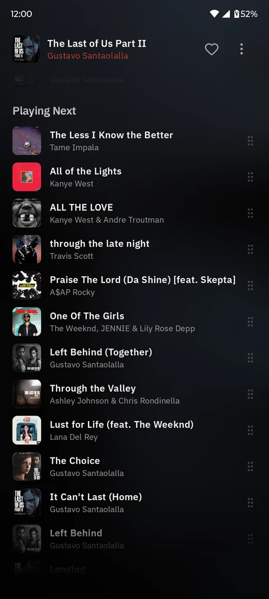
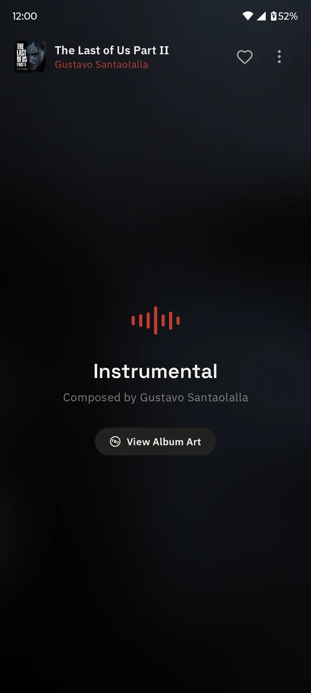

CassetteCat for Android
For phones and tablets on Android 8 and later. Get it from Google Play, or download the APK from GitHub and keep it updated with Obtainium. The source code is on GitHub.





Everything in the Android app
Playback and sound
- Gapless playback and crossfadeAlbums play without gaps, or fade from one song into the next.
- Equalizer with AutoEqFive bands, bass boost, virtualizer and loudness, with correction curves for your headphones.
- ReplayGainEven loudness between songs, with a pre-amp for files that have no tags.
- Skip SilenceJumps over long quiet stretches in live recordings and podcasts.
- Volume limitCaps the loudest level to protect your hearing.
- Sleep timerStops playback after a set time, and pauses when headphones disconnect.
- Synced lyricsFrom your files, .lrc sidecars or LRCLIB, with an editor to fix the timing.
Your library
- Local musicChoose the folders to scan, or leave some out. FLAC, MP3, AAC, ALAC, OGG, Opus and WAV.
- Browse and searchSongs, albums, artists, genres and folders, an A to Z scroller, and search as you type.
- PlaylistsYour own and smart playlists, with M3U import and export.
- Song detailsEdit titles, artists, albums and covers, and find duplicate songs.
- Artist pagesPhotos and biographies filled in from Deezer, TheAudioDB and Wikipedia.
Streaming and radio
- Your own serverNavidrome, Gonic, Airsonic and other Subsonic servers, and Jellyfin with Quick Connect.
- Offline downloadsKeep server songs on the phone for when you're offline.
- Internet radioThousands of stations from Radio Browser, by name, genre or country, plus favourites.
Listening Record
- Your statsTop songs, artists and albums, every listen, and your busiest month.
- RewindA monthly summary you can share as a poster.
- ScrobblingLast.fm, ListenBrainz and Libre.fm.
Around the phone
- Android AutoYour library, playlists and radio on the car's screen, and a Drive Mode with large buttons.
- Widget and tileA home screen widget and a Quick Settings tile.
- Listening RoomPlay the same song on several phones on your Wi-Fi. In beta.
- Your computerControl CassetteCat on your computer, move music between the two and browse its library.
Yours to set up
- LookAccent colours, including one taken from the album art, a pure black mode and a choice of fonts.
- BackupsPlaylists, favourites, stats and settings in one file, restorable on a new phone.
- PrivateNo account, ads or tracking. Server passwords are encrypted with the Android Keystore.
Still being built
CassetteCat Player
A pocket music player you can build yourself, with an ESP32, a proper DAC, a colour screen and an SD card. The phone app syncs songs to it and doubles as a remote.